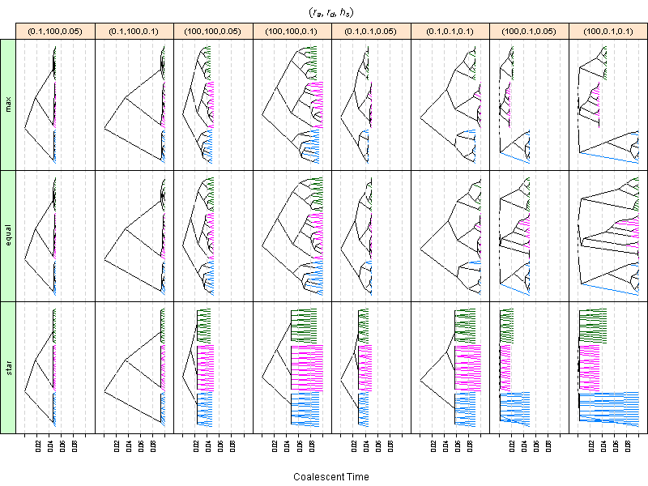

#### Trees -- Simulation studies and tree topologies by <code>ms()</code>
The R script
(<a href="./ex_trees.r" target="_blank">ex_trees.r</a>)
uses <code>ms()</code> to generate trees based on Coalescent Theory
in different conditions and scenarios and draws in the following plot.
Each panel has 50 samples in 3 groups (15, 20, 15).
In the plot, the conditions,
$(r_a, r_d, h_s)$,
indicate the growth rate of ancestral trees,
the growth rate of descendent trees, and
the total height of the trees, respectively.
The scenarios,
<code>max</code>, <code>equal</code> and <code>star</code> are
different scaling methods for descendent trees.
These trees can be applied to <code>seqgen()</code> to generate sequences
for simulation and bootstrap studies.
<center>
</img>
</center>
---
<div w3-include-html="../preamble_tail_date.html"></div>